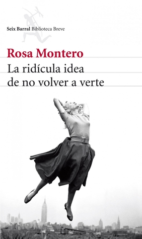

La ridícula idea de no volver a verte
Reseña por Jorge I. Zuluaga

Ver reseña en GoodReads (necesita cuenta)
Yo venía por una novela sobre parte de la vida de Maria Sklodowska y de su esposo Pierre Curie. Me esperaba una novela especialmente centrada alrededor de la muerte accidental de este último, un drama literario, una reconstrucción de esos días aciagos.
Pero no. Descubrí una biografía. Pero una biografía inesperada para mí. Y es que esta no es una obra biográfica cualquiera: es la más genuina y conmovedora obra que he leído a la fecha sobre la vida de Marie Curie. Incluso la más personal e íntima biografía que he léido sobre cualquier personaje notable del pasado.
Como le pasa a Montero, a mí me gusta el género biográfico y he leído, si no cientos de obras como Rosa nos cuenta en este libro, al menos si una docena de ellas; especialmente obras dedicadas a las vidas de científicos y científicas. Algunas de las biografías que he leído han sido biografías de la misma Maria Sklodowska. Recuerdo incluso que hace unos años dicte una charla sobre ella dirigida a algunos amigos; entonces creía que sabía algo sobre Marie Curie. Hoy, después de leer a Rosa Montero, reconozco que lo que hice fue dictar una charla sobre su trabajo científico con algunas puntadas superficiales a quién fue verdaderamente.
Ahora creo que no podría escribirse una biografía sobre Marie Curie distinta de la que hizo Rosa Montero. Y es que Maria Sklodowska ha sido una mujer relativamente incomprendida a pesar de su popularidad. Una científica ampliamente reconocida, modelo de tesón y virtudes intelectuales, usada normalmente como ejemplo para niñas y científicas jóvenes que tratan como ella de sacar la cabeza de entre los señoros que dominamos el paisaje de la ciencia; una mujer muy estudiada y analizada por biógrafos y biógrafas de todos los tipos, incluyendo su hija, Eve Curie –que Rosa cita ampliamente en su ensayo–. Pero una mujer compleja y profunda que trasciende sus récords y legado científico y técnico.
Rosa hace algo que me ha parecido increíble y que le da a este original "recuento" de la vida de Mania su sello único y al mismo tiempo nos ha permitido asomarnos al alma de la científica. En "La ridícula idea de no volver a verte" conocemos la historia de Mania y la historia de Rosa. La muerte de Pierre y la muerte de Pablo –el esposo de Rosa Montero que murió años antes de escribir este libro–. Las reflexiones sobre la vida y la muerte que hacen Curie y Montero, tan lejos en el tiempo una de otra, pero tan cercanas por una experiencia devastadora común le da un realismo único a esta biografía.
¿Y es que quién mejor para reconstruir los pensamientos o sentimientos de Mania Sklodowska, al menos durante los días más oscuros de su vida, que Rosa Montero que vivió un drama análogo y que, a diferencia de muchas otras mujeres de nuestro tiempo, que también lo vivieron o están viviendo un drama así, tiene la facilidad para convertirlo en una historia?
Hay otra cosa obvia que hace que la biografía de Rosa Montero supere con creces a otras escritas sobre la notable científica: Rosa es mujer.
Cerca de la mitad de las personas que leemos sobre Maria Sklodowska –no sé si son más los hombres o las mujeres, no es fácil decirlo y tal vez no importe– y una buena parte de los que se han dedicado a entenderla a partir de sus cartas, de sus artículos, de las anécdotas, somos hombres.
Por mucho que algunos creamos que los hechos objetivos que rodean la vida de una persona no deberían depender del sexo o el género de las personas que la estudian, yo creo, como muchas otras personas hoy, que sí. Abundan las evidencias de que es mucho lo que se gana cuando un hecho o una vida, incluso sus aspectos supuestamente más objetivos, se analizan desde ambas perspectivas, la perspectiva "masculina" y la hasta hace poco ausente perspectiva "femenina".
En muchos apartes de su biografía, Rosa lo demuestra abiertamente.
Lo hace, por ejemplo, cuando contrasta lo que muchos biógrafos y biógrafas interpretaron de situaciones en la vida de Mania y ella replica diciendo "yo creo que...". Cualquiera me podría decir que Montero no hace eso solo porque sea mujer, lo hace, pensaría uno, por que su escrito es genuino y está atravesado por su propia experiencia. Pero yo Sentí que cada vez que encontraba una interpretación de Rosa Montero sobre un evento, una palabra, un gesto de Mania, en una carta, en una foto, en una anécdota, encontraba también la perspectiva femenina de esa situación. Una perspectiva que me faltaba y que ahora me ha permitido entender cosas de la vida de Marie Curie que sencillamente no entendía o había malinterpretado.
Este libro me dejo esa sensación que le dejan a uno las buenas historias: ahora envidió a aquellas personas que no lo han leído o que apenas la van a leer, y que creo tendrán el placer que me produjo a mí mismo recorrerla por primera vez. ¡Que envidia!
Pero dejando las impresiones, ¿qué cosas concretamente que no supiera sobre la profesora Sklodowska me ha enseñado esta biografía de Rosa Montero? Vayan y apréndanlas ustedes mismos si quieren; no dejen que les haga spoiler. Igual está reseña es un mensaje enviado en una botella a mi yo futuro, así que quiero decir lo que he aprendido sobre ella y que no quiero olvidar.
Aprendí que Mania era un volcán de pasiones y emociones. Muy al contrario de lo que nos enseñan las abundantes fotografías que conocemos de ella, de lo que reflejaban su ropa oscura, su ceño fruncido, su aspecto impenetrable y de aparente estólida racionalidad, de lo por narrado biógrafos y biógrafas que parecen haber mirado sólo al personaje científico o que parecen haber echado sólo un vistazo superficial a su interior, "La ridícula idea de no volver a verte" pone en evidencia la verdadera y emocional mujer que estaba detrás de esa imagen, de esa fama.
Y para mí fue hermoso descubrirlo. Me culpo de no haberlo pensado antes porque era obvio. Maria Sklodowska amaba intensamente a Pierre, a sus hijas, amo intensamente a Langevin, amó su trabajo, amó su dedicación a las causas sociales. Amó apasionadamente, irracionalmente y eso también es un buen ejemplo y debería servir de modelo a niñas y jóvenes científicas. Y a niños jovenes varones también.
Aprendí que Maria Sklodowska estuvo a punto de no existir para la historia, como no han existido, como fueron desperdiciadas, miles sino millones de mujeres.
Marie Curie existió gracias a su decisión, muy valiente en ese momento, de dejar a su padre en Polonia –honrar al padre– para perseguir el sueño de una carrera científica –o dos, porque recordé aquí que Maria era física y matemática–. Como bien lo resalta Rosa, Mania estuvo a punto de perderse en esa existencia dedicada al cuidado de otros. Una existencia que si bien habría sido importante para su padre y sus hermanas, la habría dejado al margen de la historia; o más bien, habría dejado a la historia sin ella, como nos dejo sin miles de otras genias.
Rosa me contó lo que ningún biógrafo o biógrafa me había contado antes: que Marie Curie existió también gracias a su suegro.
Y aunque esta parezca una fórmula conocida, aquella que dice que una gran mujer prospera gracias a hombres comprensivos que le ayudan, en realidad la relación causal entre ellos fue más sutil, menos estereotipada de lo que suena. Cuando en 1897 murió su suegra y nació Irene, el padre de Pierre se fue a vivir con ellos y fue quién asumió una buena parte del cuidado de la bebe dejando a Marie el tiempo necesario para realizar su trabajo en el laboratorio. Como dice Rosa "quizá sin esa muerte, ese traslado, ese buen suegro, nunca hubiera existido Marie Curie".
¡Que bella inversión de los papeles!
(Aunque no hay que romantizar mucho esta inversión: cuando el sacrificio del cuidado lo hace una mujer, lo hace a costa de su crecimiento profesional, en cambio el suegro de Mania era un anciano de 70 años y en realidad podía dedicar tiempo libre a su nieta.)
Aprendí también que Maria, Pierre y muy posteriormente su hija Irene murieron, de una u otra razón, por la exposición a radiación ionizante. No deberíamos tapar más el sol con un dedo en este caso; no deberíamos seguir diciendo, como se sigue escuchando por ahí, que Pierre y Marie tuvieron "suerte" y aguantaron mucho más de lo que debieron; que por la ignorancia médica de su tiempo, arriesgaron su vida manipulando un enemigo invisible y de que tuvieron la suerte de no morir antes.
No, las tres murieron por la radiación.
Tal vez si Pierre no tuviera sus huesos y sus músculo debilitados por esa asesina invisible, no habría caído o se habría levantado antes de ser aplastado por el carruaje. Marie sufrió la mitad de su vida los efectos debilitantes de la enfermedad por radiación y murió, posiblemente, 40 años antes de lo que debería haber muerto. La suerte de Irene fue peor: una leucemia producto quizás de su trabajo con rayos X durante la primera guerra mundial le quito 60 años de vida.
Las tres fueron mártires de la ciencia y así deberíamos recordarles.
El libro termina con la transcripción completa del diario que Maria Sklodowska escribió después de la muerte de Pierre y que inspiró precisamente a Rosa Montero a escribir esta, su versión de Marie Curie Les reto para que lean ese diario, en ese punto del libro, el final, sin llegar a las lágrimas.
Esos diarios son por sí mismos un libro que debería publicarse y leerse.
Ahora me debato ahora entre la idea de si el diario debería estar al final o al principio de "La ridícula idea de no volver a verte".
Yo sé que Rosa Montero los puso allí, al final, por una buena razón, aunque a se me escapa ahora. Sin embargo, yo recomendaría contra la elección de la autora, que quien vaya a leer el libro por primera vez, comenzará leyendo ese diario. Y después de finalizar, lo leyera nuevamente.
En fin.
Perdidamente enamorado de Mania. Perdidamente enamorado de Rosa.